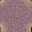

～説明～
以下の芝生に、自分で壁や通路を置くことでマップを作ることができます。
壁と通路はそれぞれ３種類用意してありますので、自分で使うブロックを選んでみましょう。
画像を見て好きなものを選んだら、右隣にあるボタンをクリックしてみてください。
そうすれば選択状態になりますので、芝生上の好きなところをクリックすることでマップを作っていくことができます。
リセットボタンを押すと画面を最初の芝生だけのマップに戻すこともできますよ。
迷路を作ってみるのも楽しいかもしれませんね。是非自分好みのマップを完成させてください！
